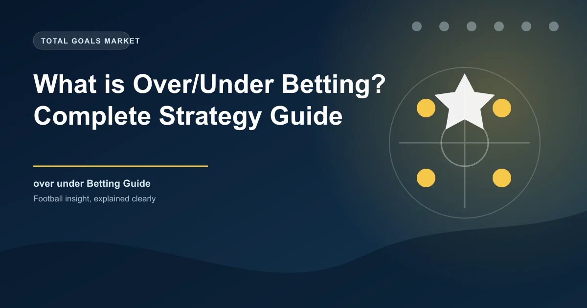

After the 1X2 market, Over/Under betting is probably the most popular way to bet on football. Instead of predicting who wins, you're predicting how many goals will be scored in the match.
It's a brilliant market because you don't need to pick a winner - you just need to judge whether the game will be high-scoring or tight.
You choose a goal line - the most common is 2.5 goals. Then you decide whether the total goals in the match will be over or under that number.
The".5" is key - it eliminates the draw possibility. You can't have exactly 2.5 goals, so there's always a winner.
Arsenal vs Tottenham: Over 2.5 @ 1.75 | Under 2.5 @ 2.10
If you bet ?10 on Over 2.5 and the match ends 2-1 (3 goals), you win ?17.50.
If the match ends 1-0 (1 goal), you lose your ?10.
You can bet on various goal lines, not just 2.5. Here's what each one means:
| Market | You Win If... | You Lose If... |
|---|---|---|
| Over 0.5 | Any goal is scored | 0-0 |
| Over 1.5 | 2+ goals | 0 or 1 goal |
| Over 2.5 | 3+ goals | 0, 1, or 2 goals |
| Over 3.5 | 4+ goals | 0, 1, 2, or 3 goals |
| Over 4.5 | 5+ goals | 4 or fewer goals |
The same logic applies to Under goals - just flipped around.
This is crucial information for Over/Under betting. Different leagues have different scoring patterns:
| League | Avg Goals/Match | Over 2.5 % | Best Line |
|---|---|---|---|
| Bundesliga | 2.95 | 60% | Over 3.5 |
| Premier League | 2.82 | 55% | Over 2.5 |
| Eredivisie | 2.78 | 54% | Over 2.5 |
| Ligue 1 | 2.60 | 50% | Over 2.5 / Under 2.5 |
| Serie A | 2.55 | 48% | Under 2.5 |
| Liga Portugal | 2.45 | 45% | Under 2.5 |
Bundesliga games average nearly 3 goals per match - Over 3.5 hits about 40% of the time, which is much higher than other top leagues. If you're building accumulators, German matches are your friend.
Before placing your Over/Under bet, consider these factors:
Some teams play attacking football, others are happy to sit back and counter-attack. Tottenham and Liverpool tend to produce high-scoring games. Burnley and Atletico Madrid? Not so much.
If a team's main goal scorer is missing, their scoring probability drops significantly. Always check team news before betting.
Heavy rain, snow, or strong winds tend to reduce goals. Summer matches in dry conditions often produce more.
Early season games tend to be more unpredictable. Teams are still finding their rhythm, and defenders often lag behind attackers in fitness.
Here's how to spot potentially valuable Over/Under bets:
Once you're comfortable with standard Over/Under, you can explore Asian goal lines. These give you more flexibility:
| Asian Line | Outcome |
|---|---|
| Over 2.25 | Win if 3+ goals, half-win if exactly 2, lose if 0-1 |
| Over 2.75 | Win if 4+ goals, half-win if exactly 3, lose if 0-2 |
| Under 2.25 | Win if 0-1 goals, half-lose if exactly 2, lose if 3+ |
Asian lines are great when you think there's value but want to reduce your risk. They're especially useful in matches where you think 2-0 or 1-1 is the most likely score.
Now you understand Over/Under betting, here's where to go next:
Get daily predictions with goal probability data:
Generate optimized accumulator combinations from today's AI-powered predictions. Set your target odds and get instant ticket suggestions.
Free Ticket Builder →